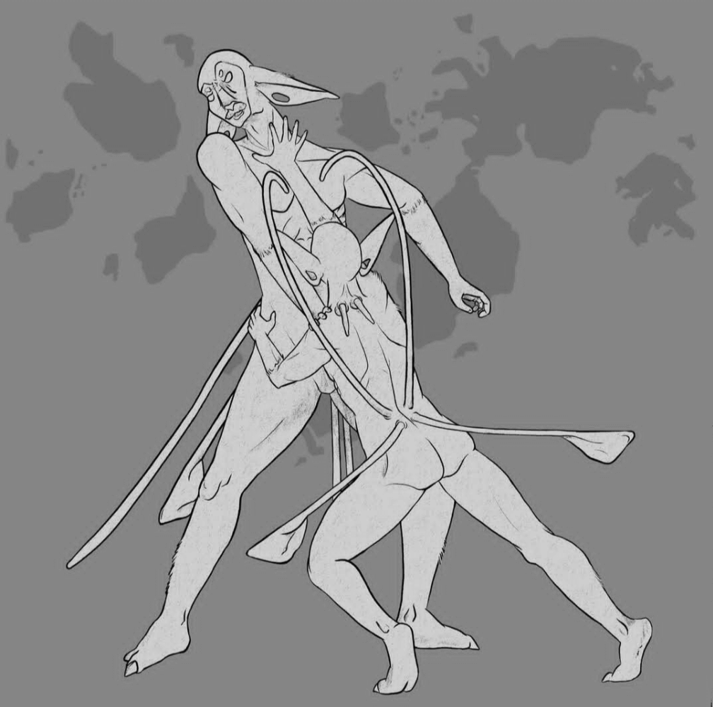

People
The Enausq'hl and Oele'in
Anatomy

Brain
Their eyes are able to zoom in to far distances and have a fixed position within
their
skull (See owl
eyes, grate-type spider
eyes, and jumping
spider anterior medan eyes).
Skull
Cranial kinesis (prokinesis) of the
skull allows enausq'\hl\ to move the upper part of their beak independently in an
upwards scooping motion (example). This
allows for loud clicks without needing to moving their eyes.
The existence of 12 neck vertebrae allow for a 180° range of neck motion. This
is
more than a human (7) but less than an owl (14).

Mouth
Their tongues are narrower and therefore their languages rely less on sounds
requiring a
superior positioning of the tongue, such as the 'L' sound.

Muscle
Their necks are able to turn a full 180° allowing them to see behind them.
Muscles
allowing for nostril contol helps to close the openings to protect from sand in the
winds.

Skin
Their fur is coarse and blue in color to ward off predators lacking blue-yellow
color
blindness and to hide by camoflauge from those that do (See tritanopia
and tetartanopia).

In order to turn 180°, their vertebrae are like an owls with more space around the arteries to allow the blood vessels freedom. They have more vertebrae with necks ~1.5x the length of a humans.
Uhnih/hl/uh are the short appendages on the back of their necks. The uhnih/hl/uh move with the base of the neck which turns a minor amount relative to the turn of the head. Females have small sacks under the uhnih/hl/uh that contain mammary glands that "leak" milk during nursery. The hair on their necks help to catch the milk while the babies feed, clinging to their parents' backs.
The photo above shows the different body parts of enasq'/hl/ and the Earth animals that share similar anatomical features or that inspired the enausq'/hl/ anatomy.
Due to their reproduction system, enausq'/hl/ do not have belly buttons.
Oele'in have no sacs on their lower uhnuhnih/hl/uh because of the abundance of food in their habitat. Due to the thick foliage of the habitat, the upper uhnuhnih/hl/uh are often docked at a young age to help with the quick movements necessary for arboreal living. The lower ones are left for defensive purposes.

Sexual dimorphism is how sexes differ from each other, including size, color, behavior,
and
reproductive organs. Many birds have no sexual dimorphism looks wise. The more
monogamous a
species is, generally the less dimorphic they are. One male mating with multiple females
will
look different so they can find each other faster.
For a current lack of better words, A = "male" and B = "female".
Einasvel were originally hermaphroditic (in the scientific definition) with both male and female sex organs, but during research I learned this is very disadvantageous for large organisms, as:
- Having two reproduction systems takes a lot of energy to maintain, as your body has to have two separate hormone balances, which often contradict. You will also be prone to twice the amount of sexual diseases, which is why hermaphroditism mainly only found in worms and slugs
- It increases self breeding and extreme inbreeding
- Having one sex battle over another ensures the strongest genes get passed on in changing environments
- Hermaphrodites typically evolve in species that don't run into each other often, which is not the case for Einasvel
For a current lack of better words, A = "male" and B = "female"
Reproduction: loacal copulation, internal fertilization, monotreme ovoviparity (mammals
with soft eggs
laid shortly before hatch).
- Fertilization occurs when A's sperm is injected into B through a cloacal kiss
- Enausq'/hl/ have a 825 days gestation period, carrying one child at a time.
- They evolved to mate in the spring season and give birth in late winter so newborns don't overheat.
- Eggs are lain 30-60 days before they hatch.
- Because of monotreme ovoviparity, they do not have bellybuttons.
- Like a platypus, their milk oozes out of mammary gland ducts (which are typically breasts) located on the underside of the uhnih/hl/uh, which the young lick out of the fur.
- They have a 60 year life span, taking 15 years to reach full growth
Outside of reproduction, Enausq'/hl/ anatomy still acts the same as any other Earth
animal
with a cloaca, recycling water back into the body.
Fun fact: The temperature a turtle fetus incubates at is often the determining
factor of
if
it is male or female (source)
General Notes:
Fertilization can be internal (humans) or external (typically in aquatic environments). External fertilization is done when a male deposits sperm into the environment and a female picks it up. After, eggs can be laid (oviparity) (can be soft and leathery like non-avian reptiles) or kept inside (ovoviparity), where they "hatch" inside or are laid right before hatch (platyfish, some sharks, lizards, etc.). Viviparity is when the young are born alive and obtain nutrients from the mother as opposed to the yolk.
Forms of Self Expression

Pointing is done with of a limp/relaxed hand. For example, pointing to yourself uses a
limp
hand
at your chest, fingers pointing towards yourself. Pointing is done with the wrists to
avoid
injuring
themselves with their sharp claws.
"Lets do this" hand shake is putting your hand in a fist upright and placing forearms
together
with another person doing the same
Touching another's uhnuhnih/hl/uh is considered very rude and to be a questioning of
their
strength and abilities.
Natural Hair only grows around 1-1.5 inches long around the body, save for the shoulders
and
upper chest where it can grow up to 5 inches.
Hairstyles can vary widely, but typically sticks to short and medium length "spikes"
along
the
head, neck, and legs.
Hair for hairstyles is gotten by either taking shaved fur from other Einasvel and
animals or
through a special process of drying, bleaching, and dying specific types of glow moss.
However
it is gotten, the hair is stuck to the head using a sticky sap solution made with ___
plants
and
___.
Because hair grows slowly and lightly on einasvel, having large and complex hairstyles
made
from
others' fur is a status symbol of being highly loved.It is not uncommon for hairstyles
to be
removed (intact) from one einasvel and planted onto the head of their child or loved
one.
Having
big hair is also a sign of being the main caretaker of your child, because it means
their
partner has no use for the long hair on their shoulders.

Because enausq'/hl/ are not at the top of the food chain, much of the things they
find
attractive revolve around their ability to protect themselves and others from
predators,
such
as:
- Long uhnuhnih/hl/uh so they appear larger and more intimidating. Larger fat sacks
to
show
they
are capable of hunting enough food to sustain themselves.
- Fast and loud beak clicking to ward of attackers.
- Head bobbing with smooth/wide movements show you can keep an eye out for predators
and
prey,
given that their eyes cannot move within heir skull
- Hair in the forearms starting higher up the arm, which shows (similarly to a
Turkey
Vulture)
that they can easily clean up after tearing into flesh.
Aside from protective attributes, some other things Einasvel find attractive are
symmetry
(in
hair, clothing, and ear holes) and large, color matched hair.
The process of courting involves a dance, where enausq/hl/ 'A' will approach
enausq/hl/
'B'
and perform a series of facial expressions that range across all emotions and
feelings.
It
is done as a way of saying "I want to be with you, so you will eventually be seeing
all
of
these expressions from me." A wider range of looks is valued more, and the accuracy
and
effort put into expressions is considered by B as well, as it shows honestly and
self
awareness. If B finds the expressions attractive, they will reciprocate by showing
their
own
expressions back.
Technology
The Age of Technology: Enausq'/hl/ are one of few advanced species on the planet. They
are still in the stone age, with writing systems just recently starting to form. Due to their slow
advancements and disinterest, within the short lifetime of the planet, they are unlikely to make it
to
the
iron age and beyond.
Despite the intricate language of the oele'in on Au/hl/ihth, they are even less advanced
technologically
than
enausq'/hl/.
Writing is typically only done by outcasts so they have somewhere and something to share. Enausq'/hl/ are more prone to share information orally. In the past, outcasts wrote stories and poems with their beaks, carving onto thin strips of soft wood, but because their beaks would dull over time, they switched to jagged stones and sticks.
Society, Law, and Structure

Einasvel name examples: Meihs, K°endih, Noohq'aud,
Thohse'ih,
Maukkohd, Pepih/hl/, Thoohe, Ek°uhq'aune
Oele' in name examples: E/hl/aunoh
When talking to a stranger, you refer to them as einasvel, or "a person". In rare
cases,
"k°k°" is used to talk down to someone, in a similar way we would say "hey
you"
to
someone we don't care for. (k°k° taken from the word k°k°ih meaning
"them"
(singular) ).
Uhnuhnih/hl/uh hold a largely significant role, making appearances in the way numbers
are
written as well.
The enausq'/hl/ society relies on bartering and equivalent exchange, measured in the personal preferences of the enausq'/hl/'s in the trade. For example, one enausq'/hl/ may want a bundle of Lilac Glow Moss in exchange for two fist sized stump creatures, while another may have no interest in Glow Moss and request shelter for a night instead.

If an einasvel harm or kill another in a way the rest of the group/village deem
unjustified,
they will
throw a ceremony of shame. They will dance and yell around the guilty person, and
force
them
to
bite off all
of their fingers (excluding the thumb) at the second joint (the DIP joint). The
guilty
will
be
given supplies, but must treat their own wounds. Once the fingers fully heal, they
will
be
treated normally by the rest of the group.
During the ceremony itself, the group will stand around the guilty in a long and
narrow
oval
shoulder to shoulder. They walk sideways in a loop, hissing and throwing up their
uhnuhnih/hl/uh
to make themselves bigger, trying to intimidate the guilty into biting themselves.
Young
einasvel who are too little to intimidate the guilty will split into two teams and
run
along
the
outside of the group, parallel to the guilty, and hold up sticks. The children and
sticks
act as
"point markers" based on the distance from the victim they are. When the guilty
finally
bites
off their fingers, the einasvel who was within the highest point barrier is marked
as
the
"most
intimidating" that finally drove them over the edge.
These "winners" are marked by the children with _(white paint along their arms and
hands)_
and
rewarded during the following days by the rest of the village, receiving _(first
bites
at
the
community feast the next day)_.


When an einasvel die, their body is taken far outside of the living territory and
left
to be
eaten by other creatures. Their hair is left on so that they are able to "die
loved."
Doing this creates a buffer where predators are then less likely to hunt living
einasvel.
To
make sure predators don't associate them for an easy meal, they wrap the dead in
thick
leaves that still take effort to dig through.